2권 세포에너지대사학 · 조판 시험본 v1 (흑백)
이광조 · 과학과영성출판사
이 장의 출발점 1780년대 파리에서 앙투안 라부아지에(Antoine Lavoisier)와 피에르 시몽 라플라스(Pierre-Simon Laplace)는 얼음으로 둘러싼 통 안에 기니피그를 넣고, 녹아 흘러내린 물의 양으로 동물이 내는 열을 쟀다. 같은 양의 탄소를 태울 때 나오는 열과 견주어 보니, 숨 쉬는 일은 천천히 타는 불과 같았다. 먹은 것이 몸에서 타서 열과 일이 된다는 생각은 여기서 시작된다. 이 책 2권 전체는 그 “천천히 타는 불”이 세포 안에서 어떻게 조절되는지를 따라간다.
열역학 제1법칙(first law of thermodynamics)은 고립된 계의 에너지 총량이 변하지 않는다고 말한다. 몸에 적용하면 간단한 장부가 된다. 먹은 음식의 화학에너지는 열, 일, 저장 에너지로 나뉘고, 나뉜 양의 합은 들어온 양과 같다. 하루 에너지 섭취와 소비가 같으면 체중은 유지되고, 섭취가 크면 남는 몫이 지방과 글리코겐의 화학에너지로 저장된다.
에너지 단위는 킬로칼로리(kcal)와 킬로줄(kJ)이 함께 쓰인다. 1 kcal는 4.184 kJ이다. 영양 표시의 “칼로리”는 대개 킬로칼로리를 뜻한다. 이 책은 분자 수준의 값에는 kJ/mol을, 개체 수준의 값에는 kcal를 쓰고, 처음 나올 때 환산을 함께 적는다.
제1법칙은 에너지의 양을 말할 뿐, 반응이 어느 쪽으로 진행하는지는 말하지 않는다. 방향을 정하는 것은 열역학 제2법칙(second law of thermodynamics)이다. 고립된 계의 엔트로피(entropy), 곧 흩어진 정도는 저절로 줄어들지 않는다. 루트비히 볼츠만(Ludwig Boltzmann)은 엔트로피를 한 거시 상태에 대응하는 미시 상태의 수로 풀이했다.
생체 반응은 온도와 압력이 일정한 조건에서 일어나므로, 조슈아 윌러드 기브스(Josiah Willard Gibbs)가 정리한 자유에너지(Gibbs free energy, G)가 방향의 기준이 된다.
ΔG = ΔH − TΔS
여기서 ΔH는 엔탈피 변화(열), T는 절대온도, ΔS는 엔트로피 변화이다. ΔG가 음수이면 반응은 저절로 진행할 수 있고(발에르곤, exergonic), 양수이면 바깥에서 에너지를 넣어 주어야 한다(흡에르곤, endergonic). 실제 세포 안의 ΔG는 반응물과 생성물의 농도에 따라 달라진다.
ΔG = ΔG°′ + RT ln Q
ΔG°′는 pH 7, 25°C, 모든 성분 1 M이라는 표준 조건의 값이고, Q는 생성물 농도와 반응물 농도의 비이다. R은 기체 상수(8.314 J/mol·K)이다. 체온 37°C(310 K)에서 RT는 약 2.58 kJ/mol이다. 이 값 덕분에 농도비가 10배 달라질 때 ΔG가 약 5.9 kJ/mol(RT ln 10) 움직인다는 어림이 가능하다.
그림 1-1. 개체에서 효소까지 에너지가 내려가는 길. 개체가 먹은 음식의 에너지는 조직과 세포의 산화를 거쳐 ATP로 모이고, 미토콘드리아의 양성자 구배를 통해 만들어진 ATP가 마지막으로 효소 한 분자의 구조 변화, 곧 일을 한다. 개념도이며 수치는 넣지 않았다.
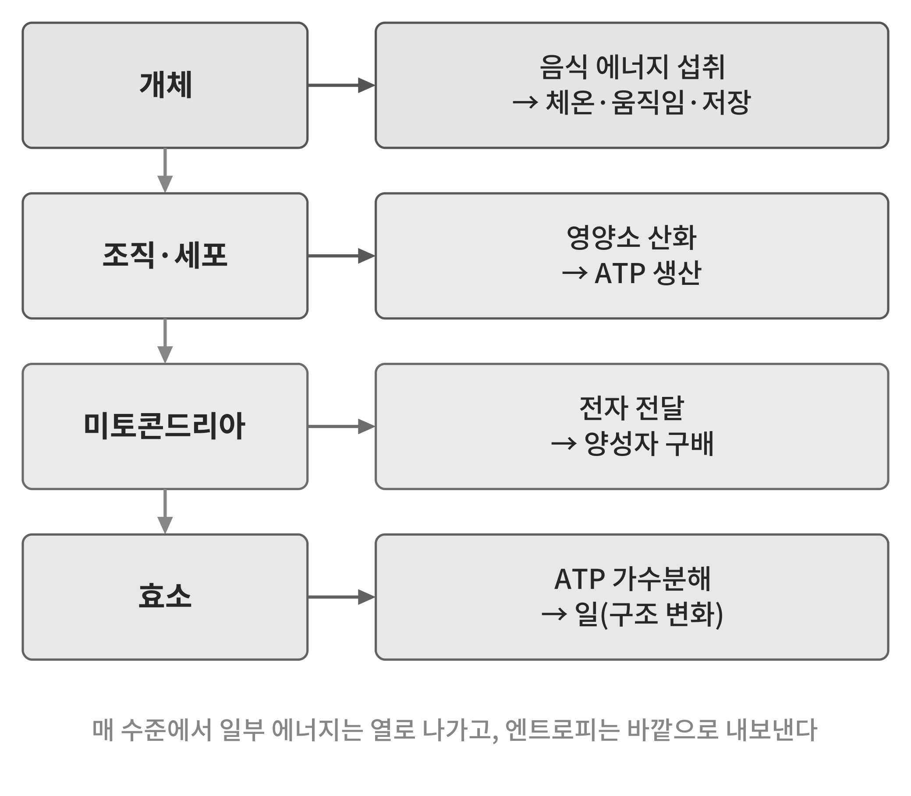
그림 1-1은 이 책 2권의 짜임과 같은 순서로 읽힌다. 1부에서 기본 법칙을, 2부에서 연료별 경로를, 3부에서 미토콘드리아를 다룬 뒤, 5부와 6부에서 개체 수준의 식후·공복 에너지 수지로 되돌아온다. 오른쪽 상자의 화살표 문구는 각 수준에서 무엇이 “받아서 쓰이는” 형태인지를 보여 준다. 각 단계에서 에너지의 일부는 열로 빠져나가며, 이 열이 체온을 유지하는 데에도 쓰인다.
닫힌 용기 안의 반응은 결국 평형(equilibrium)에 이르고, 평형에서는 ΔG가 0이어서 더 할 일이 없다. 살아 있는 세포가 평형에 이르면 죽은 것이다. 세포는 평형에서 먼 정상 상태(steady state)를 유지한다. 영양소가 들어오고 노폐물이 나가는 흐름 속에서 성분의 농도가 거의 일정하게 유지되는 상태이다.
에르빈 슈뢰딩거(Erwin Schrödinger)는 1944년 『생명이란 무엇인가』에서 생명이 “음의 엔트로피를 먹고 산다”고 썼다. 오늘의 표현으로는, 생명체는 질서를 유지하며 그 대가로 바깥에 더 큰 엔트로피를 내보낸다. 사람이 내는 열과 이산화탄소와 물이 그 엔트로피의 배출구이다. 몸의 질서를 유지하는 데는 제2법칙을 어기는 일이 없다. 계 전체, 곧 몸과 주변을 합치면 엔트로피는 증가한다.
이 장의 핵심 개념은 짝지음(coupling)이다. 흡에르곤 반응(ΔG > 0)은 ATP 가수분해 같은 발에르곤 반응(ΔG < 0)과 같은 효소 위에서 묶여, 합산한 ΔG가 음수일 때 진행한다. 세포의 모든 합성과 수송과 수축은 이 방식으로 이루어진다.
표 1-1. 생화학 반응의 표준 자유에너지 변화(ΔG°′) 기준값. pH 7, 25°C 기준. 인산기 전달 가능성이 큰 화합물일수록 ΔG°′가 더 크게 음수이다.
| 반응 | ΔG°′ (kJ/mol) | 의미 |
|---|---|---|
| 포스포엔올피루브산 가수분해 | −61.9 | 해당과정 끝에서 ATP를 만드는 강한 인산 공여체 |
| 1,3-비스포스포글리세르산 가수분해 | −49.4 | 해당과정 중간에서 ATP를 만듦 |
| 포스포크레아틴 가수분해 | −43.1 | 근육의 빠른 ATP 완충 |
| ATP → ADP + 인산 | −30.5 | 세포 에너지 화폐 |
| 포도당 6-인산 가수분해 | −13.8 | ATP보다 인산 전달 능력이 낮음 |
표 1-1에서 ATP가 인산 공여체 서열의 중간쯤에 놓인 점이 중요하다. 더 위쪽의 화합물에서 인산을 받아 ATP를 만들고, ATP가 아래쪽 화합물에 인산을 전달하며 합성에 쓰인다. 세포 안에서는 ATP, ADP, 인산의 농도가 표준 조건과 크게 달라 실제 ATP 가수분해의 ΔG는 약 −50 kJ/mol 안팎으로 더 큰 음수가 되는 것으로 알려져 있다(다음 장에서 다룬다).
Berg, J. M., Tymoczko, J. L., Gatto, G. J., Jr., & Stryer, L. (2019). Biochemistry (9th ed.). W. H. Freeman.
Lavoisier, A.-L., & Laplace, P.-S. (1783). Mémoire sur la chaleur. Histoire de l’Académie Royale des Sciences (1780), 355–408.
Nelson, D. L., & Cox, M. M. (2021). Lehninger principles of biochemistry (8th ed.). W. H. Freeman.
Schrödinger, E. (1944). What is life? The physical aspect of the living cell. Cambridge University Press.
이 장의 출발점 1929년 독일의 카를 로만(Karl Lohmann)은 근육 추출물에서 인산 화합물 하나를 분리했다. 이 물질이 아데노신 삼인산(adenosine triphosphate, ATP)이다. 12년 뒤 프리츠 리프만(Fritz Lipmann)은 ATP가 세포 안에서 에너지를 한 곳에서 다른 곳으로 옮기는 “화폐” 구실을 한다고 정리했다. 이 장은 그 화폐의 구조, 값어치, 그리고 세포가 화폐 잔고를 얼마나 알뜰하게 지키는지를 다룬다.
ATP는 아데닌(adenine)이라는 염기, 리보스(ribose)라는 오탄당, 그리고 세 개의 인산기로 이루어진다. 아데닌과 리보스가 합쳐진 부분을 아데노신(adenosine)이라 하고, 리보스에 가까운 쪽부터 알파(α), 베타(β), 감마(γ) 인산기라 부른다.
그림 2-1. ATP의 구조. 아데닌과 리보스로 이루어진 아데노신에 세 개의 인산기(Pα, Pβ, Pγ)가 한 줄로 붙어 있다. 효소는 가장 바깥의 Pγ를 떼어 내어 ADP와 무기인산을 만들고, 이때 에너지가 나온다. 개념도이다.
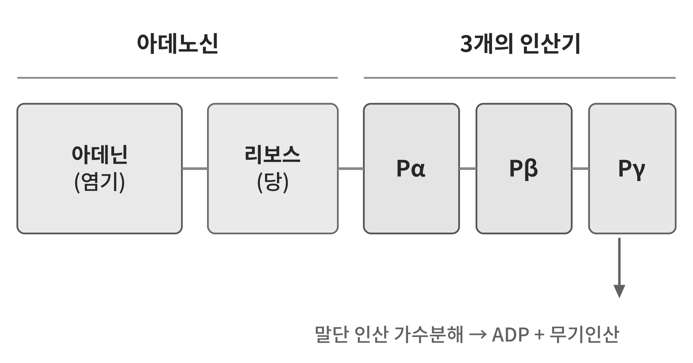
그림 2-1에서 눈여겨볼 곳은 인산기 사이의 결합이다. 이 결합은 흔히 “고에너지 결합”이라 불리지만, 결합 자체에 에너지가 담겨 있다는 뜻은 아니다. 가수분해 뒤의 생성물이 더 안정하기 때문에, 가수분해 반응의 자유에너지 변화가 큰 음수가 되는 것이다. 인산기들의 음전하끼리의 반발, 생성물인 무기인산의 공명 안정화, 용매화가 그 이유로 꼽힌다.
1장 표 1-1에서 ATP 가수분해의 표준 자유에너지 변화는 −30.5 kJ/mol이었다. 그러나 세포 안의 ATP, ADP, 인산 농도는 표준 조건(1 M)과 아주 다르다. 세포는 ATP를 ADP보다 훨씬 높게 유지하므로 Q가 작아지고, 1장의 식 ΔG = ΔG°′ + RT ln Q에 따라 실제 ΔG는 더 큰 음수가 된다. 문헌에서는 세포 안 값을 대체로 −50 kJ/mol 안팎으로 본다. 세포가 ATP를 평형 농도보다 훨씬 높게 지킨다는 사실이 이 값의 핵심이다. ATP는 평형에서 먼 곳에 놓인 “충전된 전지”인 셈이다.
몸에 한 번에 들어 있는 ATP의 양은 많지 않지만, 하루에 쓰이는 ATP의 총량은 체중에 맞먹을 만큼 크다고 흔히 설명한다. 어느 한 순간의 ATP는 몇 분 안에 다시 쓰이고 다시 만들어진다. 따라서 ATP는 저장 물질이 아니라 순환하는 중간 물질이다.
그림 2-2. ATP-ADP 순환. ATP는 근수축, 이온 수송, 생합성 같은 일에 쓰여 ADP와 무기인산이 되고, 해당과 산화적 인산화가 이를 다시 ATP로 되돌린다. 순환이 한쪽으로 쏠리면 ADP와 AMP가 늘어나며, AMP는 아데닐산 키네이스(adenylate kinase) 반응으로 만들어진다.
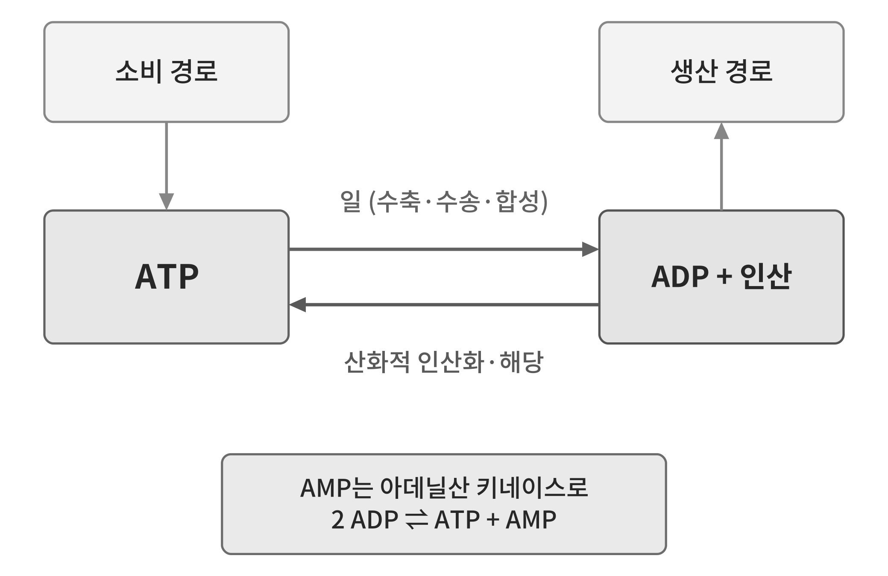
그림 2-2의 아래쪽 상자는 이 장의 둘째 주제를 예고한다. 두 분자의 ADP가 ATP와 AMP로 바뀌는 평형 반응(2 ADP ⇌ ATP + AMP)은 ATP가 조금만 줄어도 AMP를 크게 늘린다. ATP 농도가 약간 변할 때 AMP 농도는 훨씬 큰 비율로 변하므로, AMP는 에너지 부족을 알리는 예민한 신호가 된다. 4부 14장의 AMPK(AMP-activated protein kinase)가 바로 이 신호를 읽는다.
대니얼 앳킨슨(Daniel Atkinson)은 1960년대에 세포의 에너지 상태를 한 숫자로 나타내는 방법을 제안했다. 에너지 전하(energy charge)는 아데닌 뉴클레오타이드 총량 중에서 에너지가 충전된 정도를 나타낸다.
에너지 전하 = ([ATP] + 0.5 × [ADP]) / ([ATP] + [ADP] + [AMP])
ATP만 있으면 1, ADP만 있으면 0.5, AMP만 있으면 0이다. ADP는 인산 고에너지 결합이 하나이므로 절반으로 센다. 앳킨슨은 에너지를 생산하는 경로는 에너지 전하가 낮을 때 활발해지고, 소비하는 합성 경로는 높을 때 활발해진다고 보았다. 정상 세포의 에너지 전하는 대체로 0.8~0.95 범위에서 유지된다고 알려져 있다.
표 2-1. 에너지 전하의 해석. 값은 위 정의식으로 계산한 이론 값이며, 실제 세포의 해석 범위는 조직과 조건에 따라 다르다.
| 아데닌 뉴클레오타이드 구성 | 에너지 전하 | 해석 |
|---|---|---|
| ATP 100% | 1.00 | 완전 충전 |
| ATP 80%, ADP 20% (AMP 없음) | 0.90 | 정상 범위의 예 |
| ATP 70%, ADP 20%, AMP 10% | 0.80 | 정상 범위 하한의 예 |
| ATP 40%, ADP 40%, AMP 20% | 0.60 | 에너지 부족 신호 |
| ADP 100% | 0.50 | 전체가 한 단계 방전 |
| AMP 100% | 0.00 | 완전 방전 |
표 2-1을 읽을 때 주의할 점이 있다. 에너지 전하가 0.90에서 0.80으로 내려가는 것은 겉보기에 작은 변화이지만, 표의 세 번째 줄처럼 AMP가 10%나 차지하는 상태이다. 앞에서 본 아데닐산 키네이스 증폭 때문에 이 정도의 변화에도 AMPK가 켜진다. 2권 5부와 6부에서 식후와 공복의 세포가 다른 에너지 전하의 영역을 오간다는 이야기가 나올 때 이 점을 다시 쓴다.
Atkinson, D. E. (1977). Cellular energy metabolism and its regulation. Academic Press.
Lipmann, F. (1941). Metabolic generation and utilization of phosphate bond energy. Advances in Enzymology, 1, 99–162.
Lohmann, K. (1929). Über die Pyrophosphatfraktion im Muskel. Naturwissenschaften, 17(31), 624–625.
Nelson, D. L., & Cox, M. M. (2021). Lehninger principles of biochemistry (8th ed.). W. H. Freeman.
이 장의 출발점 1906년 아서 하든(Arthur Harden)과 윌리엄 영(William Young)은 효모 즙에서 발효를 돕는, 끓여도 살아남는 작은 분자를 찾아냈다. 코엔자임(조효소)이라 불리게 된 이 물질은 훗날 오토 바르부르크(Otto Warburg)가 수소를 나르는 역할을 밝히면서 정체가 드러났다. 이것이 니코틴아마이드 아데닌 다이뉴클레오타이드, NAD이다. 세포의 연료 분해는 결국 전자를 NAD와 그 사촌들에게 맡기는 일이며, 이 장은 그 전자 운반의 규칙을 정리한다.
산화(oxidation)는 전자를 잃는 일, 환원(reduction)은 전자를 얻는 일이다. 둘은 항상 짝으로 일어난다. 영양소의 분해는 연료 분자가 산화되고 전자 운반체가 환원되는 반응이며, 마지막에는 산소가 전자를 받아 물이 된다. 생체 반응에서는 전자가 수소 원자(양성자 하나와 전자 하나) 또는 수소화 이온(양성자 하나와 전자 둘)의 형태로 옮겨지는 경우가 많다.
전자를 받으려는 경향은 표준 환원 전위(standard reduction potential, E°′)로 나타낸다. 값이 더 음수인 쌍은 전자를 내놓기 쉽고, 더 양수인 쌍은 전자를 받기 쉽다. 전자는 음수 쪽에서 양수 쪽으로 흘러내려 가며, 흐른 전위차 ΔE°′에서 자유에너지가 얻어진다.
ΔG°′ = −n F ΔE°′
n은 옮겨진 전자의 수, F는 패러데이 상수(96.485 kJ/V·mol)이다.
그림 3-1. 산화환원 쌍의 전위 사다리. 위쪽의 NAD+/NADH(−0.32 V)에서 아래쪽의 산소/물(+0.82 V)로 갈수록 전자를 받으려는 경향이 커진다. 전자는 사다리를 따라 내려가며 에너지를 내놓는다. 값은 교과서 표준 값이다.
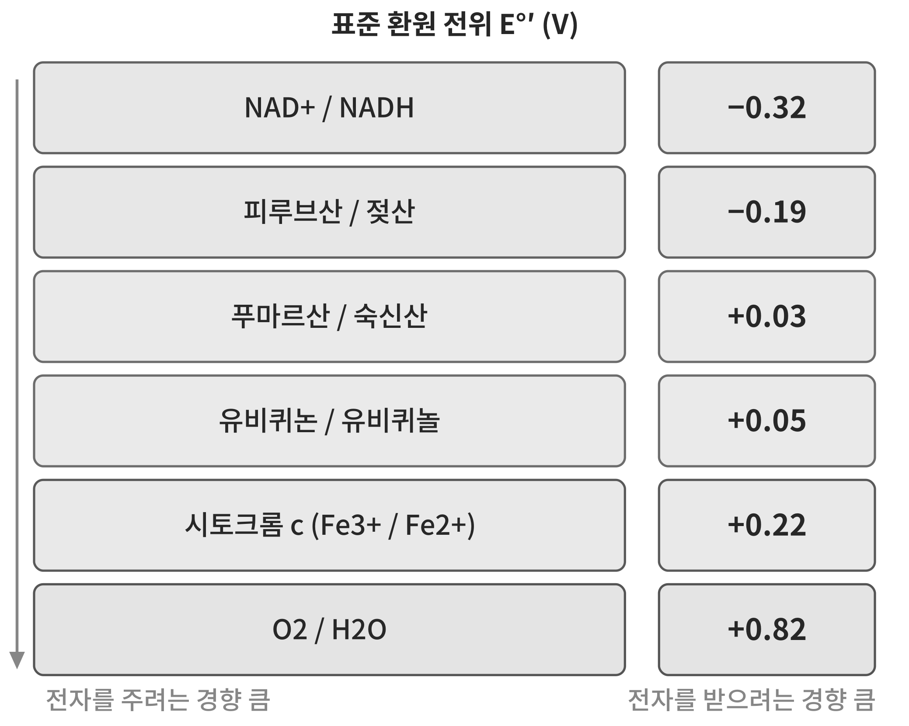
그림 3-1은 3부의 전자전달계를 미리 보여 주는 지도이다. NADH에서 산소까지의 전위차는 0.82 − (−0.32) = 1.14 V이다. 전자 둘이 옮겨가는 반응이므로 ΔG°′ = −2 × 96.485 × 1.14 ≈ −220 kJ/mol로, 포도당 한 분자의 완전 산화 에너지에서 NADH 하나가 차지하는 몫이 얼마나 큰지를 한눈에 보여 준다. 이 큰 낙차를 한꺼번에 쓰지 않고 여러 단계로 쪼개 ATP 합성에 이용하는 장치가 전자전달계이다.
니코틴아마이드 아데닌 다이뉴클레오타이드(nicotinamide adenine dinucleotide, NAD)는 산화형 NAD+와 환원형 NADH로 존재한다. 탈수소효소(dehydrogenase)가 기질에서 수소화 이온을 떼어 NAD+에 건네면 NADH가 된다. 비타민 B3인 니아신(niacin)이 NAD의 재료이다.
플라빈 아데닌 다이뉴클레오타이드(flavin adenine dinucleotide, FAD)는 비타민 B2인 리보플래빈(riboflavin)에서 만들어진다. FAD는 보통 효소에 단단히 붙어 있으면서 전자 둘을 받아 FADH2가 된다. TCA 회로의 숙신산 탈수소효소와 지방산 β산화의 첫 효소가 FAD를 쓴다.
NADPH는 NADH에 인산기 하나가 더 붙은 분자이다. 구조는 거의 같지만 세포는 둘을 다른 용도로 쓴다. NADH는 연료를 분해하면서 얻은 전자를 전자전달계에 보내는 “분해의 운반체”이고, NADPH는 지방산과 콜레스테롤 합성, 항산화 방어(글루타티온 환원)에 전자를 공급하는 “합성과 방어의 운반체”이다.
역할이 나뉘는 비결은 비율에 있다. 세포질에서 NAD+는 NADH보다 훨씬 많은 산화형으로 유지되어 분해 반응이 끌려가고, NADP+는 NADPH보다 훨씬 적은 형태로 유지되어 합성 반응에 쓸 환원력이 늘 충전되어 있다. 문헌에서는 간 세포질의 NAD+/NADH 비를 수백 대 1 수준, NADP+/NADPH 비를 1보다 훨씬 작은 값으로 본다. 같은 효소 모양에서 인산 하나 차이로 서로 다른 효소 집단이 구별해 쓰는 것이다. NADPH의 주요 공급원은 오탄당 인산 경로와 사이토솔 NADP 의존 효소들이다.
반응이 어느 쪽으로 진행하는지는 ΔG에 달렸고, ΔG는 농도비 Q에 의해 움직인다(1장). 따라서 세포 안의 NAD+/NADH 비가 크면 NAD+를 쓰는 산화 반응(예: 젖산 → 피루브산)이 유리하고, 비가 작으면 반대 방향(피루브산 → 젖산)이 유리하다. 산소가 부족해 전자전달계가 NADH를 다 비우지 못하면 NAD+/NADH 비가 떨어지고, 세포는 젖산 생성으로 NAD+를 재생한다. 이 원리는 5부의 식후·공복 전환에서 반복해 쓰인다. 식사 뒤에 미토콘드리아 안 NADH가 늘면 TCA 회로와 지방산 산화의 속도가 떨어지고, 공복에는 반대가 된다. 4부에서 다룰 시르투인(sirtuin)은 NAD+ 농도 자체를 신호로 읽는 효소이다.
표 3-1. 주요 산화환원 조효소 요약.
| 조효소 | 비타민 재료 | 주된 역할 | 대표 반응 |
|---|---|---|---|
| NAD+/NADH | 니아신(B3) | 분해 경로의 전자 운반, 전자전달계 입력 | 해당 과정의 글리세르알데하이드 3-인산 탈수소효소, TCA 회로 탈수소효소 |
| NADP+/NADPH | 니아신(B3) | 합성과 항산화에 환원력 공급 | 지방산 합성, 콜레스테롤 합성, 글루타티온 환원 |
| FAD/FADH2 | 리보플래빈(B2) | 효소에 결합한 전자 운반 | 숙신산 탈수소효소, 아실-CoA 탈수소효소 |
| FMN/FMNH2 | 리보플래빈(B2) | 복합체 I의 전자 수용 | 복합체 I(NADH 탈수소효소) |
| 유비퀴논(CoQ) | 세포 내 합성 | 막 안에서 전자 이동 | 복합체 I·II에서 III로 전자 전달 |
표 3-1을 읽는 요령은 두 가지이다. 첫째, 같은 비타민(니아신)에서 만들어진 NAD와 NADP가 “분해”와 “합성”으로 나뉘어 쓰인다는 점이다. 둘째, FAD와 FMN이 효소에 단단히 붙어 있는 데 비해 NAD는 효소 사이를 오가는 운반체라는 점이다. 이 차이가 3부와 6부에서 NADH와 FADH2가 전자전달계의 서로 다른 입구로 들어가는 이유를 이해하는 단서가 된다.
Berg, J. M., Tymoczko, J. L., Gatto, G. J., Jr., & Stryer, L. (2019). Biochemistry (9th ed.). W. H. Freeman.
Nelson, D. L., & Cox, M. M. (2021). Lehninger principles of biochemistry (8th ed.). W. H. Freeman.
Williamson, D. H., Lund, P., & Krebs, H. A. (1967). The redox state of free nicotinamide-adenine dinucleotide in the cytoplasm and mitochondria of rat liver. Biochemical Journal, 103(2), 514–527.
이 장의 출발점 1930년대 한스 크렙스(Hans Krebs)는 간 조직 조각이 여러 유기산을 태우는 속도를 하나하나 재면서, 물질들이 줄줄이 이어진 하나의 고리를 이룬다는 것을 알아냈다. 낱낱의 반응이 지도 위의 길로 합쳐진 순간이다. 대사 지도는 처음 보면 화살표 덩어리지만, 읽는 요령이 몇 가지 있다. 이 장은 그 요령을 정리한다. 이 요령을 알면 이후 38개 장의 경로 그림이 같은 문법으로 읽힌다.
대사(metabolism)는 세포 안의 모든 화학 반응의 총합이다. 분해 쪽을 이화(catabolism), 합성 쪽을 동화(anabolism)라 한다. 반응 하나하나는 효소(enzyme)가 촉매하며, 한 효소의 생성물이 다음 효소의 기질이 되어 이어진 연쇄를 경로(pathway)라 한다. 지도에서 물질은 점(노드), 효소는 선(화살표)이고, 선 옆에 효소 이름이 적힌다.
그림 4-1. 중심 대사 지도. 포도당은 해당을 거쳐 피루브산이 되고, 피루브산 탈수소효소(PDH)를 거쳐 아세틸-CoA가 된다. 지방산은 β산화로 아세틸-CoA가 되며, 아미노산은 피루브산 등으로 들어온다. 아세틸-CoA는 TCA 회로와 전자전달계로 흘러 ATP를 만들고, 간에서는 케톤체로도 쓰인다. 개념도이다.
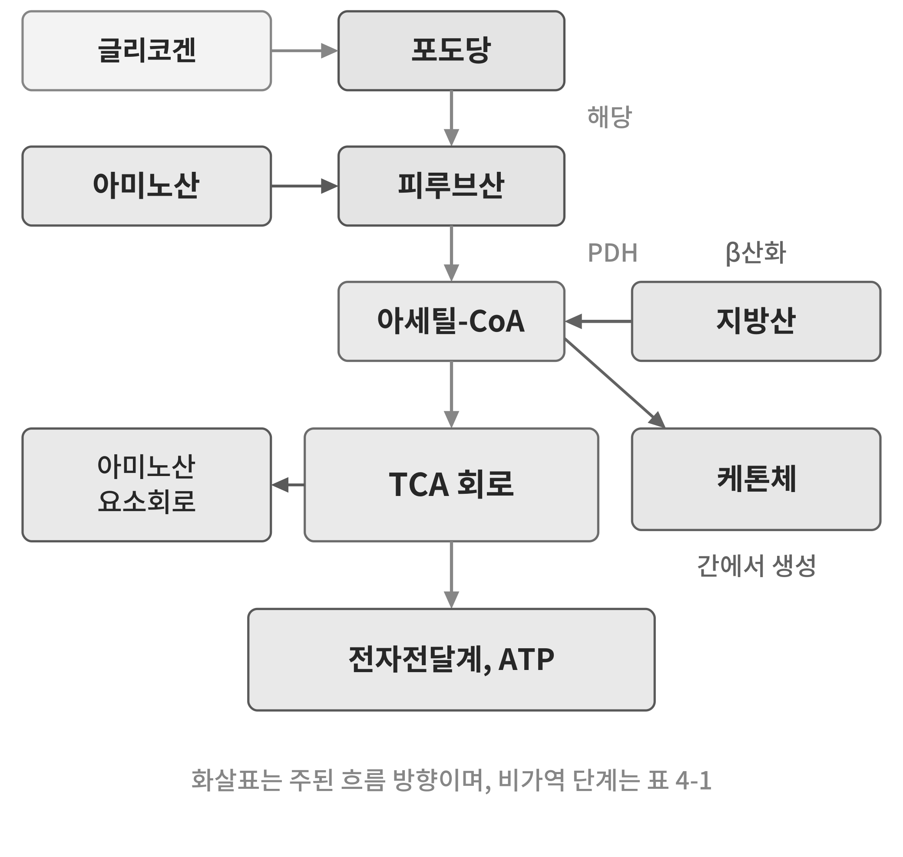
그림 4-1에서 가장 중요한 점은 아세틸-CoA가 모든 연료의 합류점이라는 사실이다. 탄수화물, 지방, 단백질이 서로 다른 입구로 들어와 아세틸-CoA라는 공통 통로를 거친다. 이후의 장들에서 반복되는 “한 병목, 여러 입구” 구조이다. 이 지도의 모든 화살표를 처음부터 외울 필요는 없다. 각 장은 이 지도의 한 구역을 확대한다.
대사 경로의 반응 대부분은 평형에 가까워, 반응물과 생성물의 농도 비에 따라 양방향으로 움직인다. 이런 가역 단계는 경로의 속도를 정하지 않는다. 경로의 속도를 정하는 것은 평형에서 멀리 떨어진, 곧 ΔG가 큰 음수인 단계이다. 이 단계는 한쪽 방향으로만 진행하므로 비가역 단계라 한다.
비가역 단계가 중요한 이유는 두 가지이다. 첫째, 이 단계가 경로의 “수도꼭지”이므로 조절이 여기에 모인다. 둘째, 역방향 경로(예: 포도당 신생)는 같은 단계를 다른 효소로 우회해야 한다. 분해와 합성이 같은 길을 되돌아가지 않고 서로 다른 길을 쓰는 것은 대사 조절의 보편 원리이다.
효소의 활성을 바꾸는 방법은 크게 세 가지이다. 첫째는 알로스테릭 조절로, 기질이나 생성물, ATP, AMP 같은 신호 물질이 효소에 붙어 활성을 바꾼다. 둘째는 공유 결합 변형으로, 인산화·탈인산화로 효소를 켜고 끈다. 셋째는 효소의 양을 바꾸는 유전자 발현 조절이다. 앞의 둘은 초 단위, 셋째는 시간 단위로 작동한다. 식후와 공복처럼 몇 시간 단위로 바뀌는 상태에서는 세 방법이 모두 쓰인다.
표 4-1. 핵심 조절 효소 목록. 이후 장에서 자세히 다룬다. 방향은 일반적인 교과서 서술이다.
| 경로 | 조절 효소 | 주요 조절자 | 이후 장 |
|---|---|---|---|
| 해당 | 헥소키네이스, 포스포프럭토키네이스-1(PFK-1), 피루브산 키네이스 | ATP·시트르산이 억제, AMP·프럭토스 2,6-이인산이 활성화 | 5장 |
| 연결 반응 | 피루브산 탈수소효소(PDH) | 아세틸-CoA·NADH가 억제, 인슐린 신호가 활성화 | 6장 |
| TCA 회로 | 시트르산 합성효소, 이소시트르산 탈수소효소, α-케토글루타르산 탈수소효소 | ATP·NADH가 억제, ADP·칼슘이 활성화 | 6장 |
| 글리코겐 | 글리코겐 합성효소, 글리코겐 포스포릴레이스 | 인슐린과 글루카곤·에피네프린이 인산화로 반대로 조절 | 5장 |
| 지방산 | 아세틸-CoA 카르복실화효소(ACC), 카르니틴 팔미토일기 전이효소 1(CPT1) | 말로닐-CoA가 CPT1을 억제 | 7장 |
| 포도당 신생 | 프럭토스 1,6-이인산 가수분해효소, PEP 카르복시키네이스(PEPCK) | 글루카곤·코르티솔이 증가, 인슐린이 감소 | 23장 |
| 케톤 생성 | HMG-CoA 합성효소(미토콘드리아) | 인슐린이 억제, 공복에서 증가 | 8장 |
표 4-1에서 눈여겨볼 점은 같은 대사물질이 여러 경로를 한꺼번에 조절한다는 점이다. 시트르산이 해당(PFK-1)을 억제하는 것은 TCA 회로가 막혔을 때 입구를 닫는 되먹임이다. 말로닐-CoA는 지방산 합성의 재료이면서 지방산 산화의 입구(CPT1)를 막아, 합성과 분해가 동시에 돌아가는 낭비를 막는 스위치가 된다. 이 스위치는 7장에서, 식후와 공복의 전환은 29장에서 다시 만난다.
지도 위의 분기점에서 물질이 어느 길로 가는지는 세 요소가 정한다. 하나는 효소의 친화도(Km)로, 기질이 낮은 농도에서도 효소와 결합하는 정도이다. 둘은 기질의 농도이며, 셋은 최종 산물의 되먹임 신호이다. 예를 들어 포도당 6-인산은 해당, 글리코겐 합성, 오탄당 인산 경로로 갈라지는데, 어느 쪽이 우세한지는 세포의 에너지 상태(2장)와 환원력 요구량(3장)이 정한다. 이 책이 에너지 전하와 NADPH를 앞에서 먼저 다룬 이유이다.
Berg, J. M., Tymoczko, J. L., Gatto, G. J., Jr., & Stryer, L. (2019). Biochemistry (9th ed.). W. H. Freeman.
Krebs, H. A., & Johnson, W. A. (1937). The role of citric acid in intermediate metabolism in animal tissues. Enzymologia, 4, 148–156.
Nelson, D. L., & Cox, M. M. (2021). Lehninger principles of biochemistry (8th ed.). W. H. Freeman.
이 장의 출발점 1897년 독일의 에두아르트 부흐너(Eduard Buchner)는 효모를 갈아 짜낸 즙에 설탕을 넣으면 살아 있는 세포가 없는데도 발효가 일어난다는 것을 보았다. 발효는 “생명의 힘”이 아니라 화학 반응의 연쇄라는 사실이 처음 확인된 순간이다. 이후 수십 년에 걸쳐 그 연쇄의 열 단계가 하나씩 밝혀졌고, 이를 해당(glycolysis)이라 부른다. 해당은 모든 생물이 가진 가장 오래된 에너지 경로이며, 사람 세포에서는 포도당이 거의 모든 경로로 들어가는 출입구이다.
해당은 세포질에서 일어나는 포도당(glucose) 한 분자를 피루브산(pyruvate) 두 분자로 쪼개는 열 단계 반응이다. 산소가 필요 없다. 앞의 다섯 단계를 준비 단계, 뒤의 다섯 단계를 보상 단계라 부른다. 준비 단계에서 ATP 두 분자를 투입해 포도당을 인산화하고 둘로 쪼개고, 보상 단계에서 쪼개진 조각 둘이 각각 ATP 둘과 NADH 하나를 만든다.
그림 5-1. 해당의 열 단계. 왼쪽은 준비 단계(포도당에서 글리세르알데하이드 3-인산까지), 오른쪽은 보상 단계(1,3-비스포스포글리세르산에서 피루브산까지)이다. 글리세르알데하이드 3-인산에서 1,3-비스포스포글리세르산으로 넘어가는 단계는 글리세르알데하이드 3-인산 탈수소효소(GAPDH)가 맡아 NADH를 만든다. 붉은 상자는 비가역 단계(헥소키네이스, PFK-1, 피루브산 키네이스)에서 만들어지는 물질이다. 약어: HK 헥소키네이스, GPI 포도당 6-인산 이성질화효소, PFK-1 포스포프럭토키네이스-1, TPI 삼탄당 인산 이성질화효소, PGK 포스포글리세르산 키네이스, PGM 포스포글리세르산 뮤테이스, PK 피루브산 키네이스.
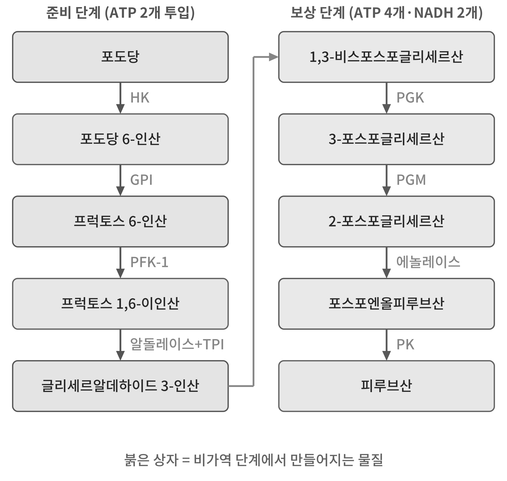
그림 5-1에서 “한 줄”로 읽히는 단계가 사실은 두 줄이라는 점에 주의해야 한다. 프럭토스 1,6-이인산은 알돌레이스에 의해 삼탄당 둘로 쪼개지고, 그중 디하이드록시아세톤 인산은 삼탄당 인산 이성질화효소를 거쳐 글리세르알데하이드 3-인산으로 바뀐다. 이후 보상 단계는 포도당 한 분자당 두 번 돌아간다. 따라서 포도당 한 분자의 해당 총수지는 ATP 순증 2, NADH 2, 피루브산 2이다. 준비 단계에서 ATP를 2 썼고 보상 단계에서 4를 만들었으므로 순이익은 2이다.
4장에서 배운 대로, 경로의 속도는 비가역 단계가 정한다. 해당에서는 헥소키네이스, PFK-1, 피루브산 키네이스가 그 자리에 있다.
헥소키네이스(hexokinase)는 포도당에 인산을 붙여 포도당 6-인산을 만든다. 근육 등 대부분의 조직에서 이 효소는 생성물인 포도당 6-인산에 의해 억제된다. 인산화된 포도당이 쌓이면 입구가 닫히는 되먹임이다. 간과 췌장 β세포에는 글루코키네이스(glucokinase)라는 다른 형태가 있다. 글루코키네이스는 포도당에 대한 친화도가 낮아(Km이 높아) 혈당이 높을 때만 활발히 작동하고, 포도당 6-인산으로 억제되지 않는다. 그래서 식사 후 혈당이 오르면 간이 포도당을 대량으로 받아들이고, 췌장 β세포는 혈당을 “읽는” 센서로 쓴다. 글루코키네이스가 β세포에서 하는 역할은 34장에서, 식후의 간에서 하는 일은 18장에서 다룬다.
PFK-1은 해당의 가장 중요한 조절점이다. ATP와 시트르산이 PFK-1을 억제하고, AMP와 프럭토스 2,6-이인산이 활성화한다. 에너지 전하(2장)가 낮아 AMP가 늘면 해당이 빨라지고, ATP가 충분하면 느려진다. 프럭토스 2,6-이인산은 간에서 인슐린과 글루카곤이 조절하는 신호 분자이다. 인슐린이 있으면 이 분자가 늘어 해당이 촉진되고, 글루카곤이 있으면 줄어들어 해당이 억제된다. 이 점은 15장과 27장에서 다시 만난다.
피루브산 키네이스(pyruvate kinase)는 마지막 단계에서 ATP를 만든다. 간에서는 글루카곤 신호가 이 효소를 인산화해 억제하므로, 공복에는 포도당이 해당으로 흘러가지 않고 다른 조직을 위해 남는다.
표 5-1. 해당 열 단계 요약.
| 단계 | 효소 | 반응 | 특징 |
|---|---|---|---|
| 1 | 헥소키네이스 / 글루코키네이스 | 포도당 → 포도당 6-인산 | ATP 소모, 비가역 |
| 2 | 포도당 6-인산 이성질화효소 | → 프럭토스 6-인산 | 가역 |
| 3 | PFK-1 | → 프럭토스 1,6-이인산 | ATP 소모, 비가역, 주 조절점 |
| 4 | 알돌레이스 | → 디하이드록시아세톤 인산 + 글리세르알데하이드 3-인산 | 가역 |
| 5 | 삼탄당 인산 이성질화효소 | 두 삼탄당 인산을 상호 전환 | 가역 |
| 6 | GAPDH | 글리세르알데하이드 3-인산 → 1,3-비스포스포글리세르산 | NADH 생성 |
| 7 | 포스포글리세르산 키네이스 | → 3-포스포글리세르산 | ATP 생성(기질 수준 인산화) |
| 8 | 포스포글리세르산 뮤테이스 | → 2-포스포글리세르산 | 가역 |
| 9 | 에놀레이스 | → 포스포엔올피루브산 | 가역 |
| 10 | 피루브산 키네이스 | → 피루브산 | ATP 생성, 비가역 |
표 5-1의 “기질 수준 인산화”는 산소와 전자전달계 없이 효소 반응만으로 ADP에 인산을 붙이는 방식을 말한다. 1장 표 1-1에서 본 대로 1,3-비스포스포글리세르산과 포스포엔올피루브산은 ATP보다 인산 전달 능력이 커서 ATP를 만들 수 있다.
해당이 끝나면 피루브산이 세포의 “교차로”에 선다. 어느 길로 가는지는 산소, 에너지 상태, 호르몬이 정한다.
그림 5-2. 피루브산의 네 갈래 길. 산소가 부족하거나 미토콘드리아가 없는 세포(적혈구)에서는 젖산 탈수소효소(LDH)가 피루브산을 젖산으로 바꾼다. 산소가 충분하면 피루브산 탈수소효소(PDH)가 아세틸-CoA로 바꾸어 TCA 회로에 들여보낸다. 피루브산 카르복실화효소(PC)는 옥살로아세트산을 만들어 TCA 회로를 채우거나 포도당 신생으로 이어 주고, 알라닌 아미노기 전달효소(ALT)는 알라닌을 만든다.
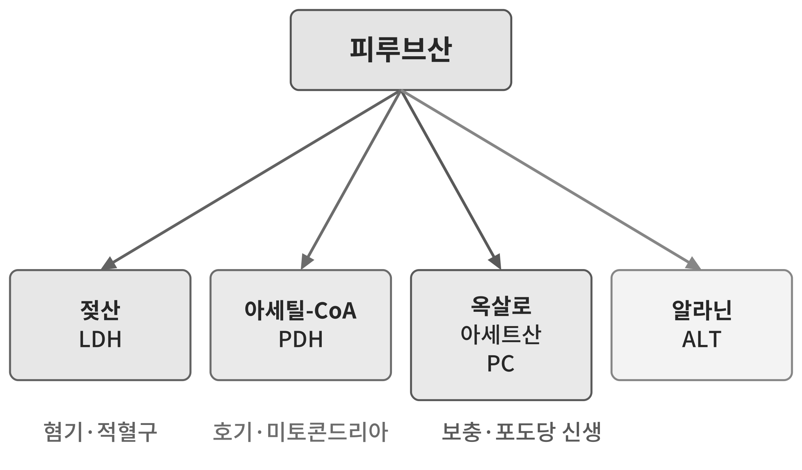
그림 5-2의 젖산 경로는 단순한 “막다른 길”이 아니다. 젖산을 만들 때 NADH가 NAD+로 되돌아가므로, 해당의 6단계가 계속 돌아갈 NAD+가 공급된다(3장). 젖산은 혈액을 타고 간으로 가서 포도당으로 재합성되는데, 이를 코리 회로(Cori cycle)라 한다. 칼 코리(Carl Cori)와 게르티 코리(Gerty Cori) 부부가 1930년대에 밝혔다. 이 회로는 근육의 “임시 연료 정산”을 간에 맡기는 구조이며, 간은 이 과정에서 ATP를 소비한다. 아세틸-CoA로 가는 길과 PDH의 조절은 6장에서, 옥살로아세트산으로 가는 길과 포도당 신생은 23장에서 다룬다.
포도당은 혈액에서 항상 일정한 농도로 유지되어야 하므로, 몸은 남는 포도당을 글리코겐(glycogen)이라는 가지 달린 중합체로 저장한다. 클로드 베르나르(Claude Bernard)는 1857년 간에서 이 물질을 발견하고, 간이 혈당을 조절한다는 개념을 처음 제시했다. 글리코겐은 간과 골격근에 주로 저장된다. 일반적으로 간에는 100 g 안팎, 근육에는 400 g 안팎이 있다고 하나 개인차가 크다.
합성은 글리코겐 합성효소(glycogen synthase)가 UDP-포도당에서 포도당 단위를 사슬 끝에 붙여 길게 늘이는 방식이고, 가지는 가지 형성 효소가 만든다. 분해는 글리코겐 포스포릴레이스(glycogen phosphorylase)가 사슬 끝에서 포도당 1-인산을 하나씩 떼어 내고, 가지 부위는 탈가지 효소가 처리한다. 합성과 분해가 서로 다른 효소로 이루어지는 점은 4장에서 설명한 “서로 다른 길” 원리의 전형이다.
표 5-2. 글리코겐 대사 효소와 호르몬 조절.
| 효소 | 방향 | 인슐린 신호 | 글루카곤·에피네프린 신호 | 주 조직 |
|---|---|---|---|---|
| 글리코겐 합성효소 | 합성 | 탈인산화로 활성화 | 인산화로 억제 | 간, 근육 |
| 글리코겐 포스포릴레이스 | 분해 | 탈인산화로 억제 | 인산화(포스포릴레이스 키네이스)로 활성화 | 간, 근육 |
표 5-2의 핵심은 두 호르몬이 같은 단백질 키네이스·포스파테이스 장치를 통해 두 효소를 반대 방향으로 동시에 조절한다는 것이다. 합성과 분해가 동시에 돌아 에너지를 낭비하는 일을 막는다. 간 글리코겐은 혈당을 지키는 공급원으로, 근육 글리코겐은 근육 자신의 운동 연료로 쓰인다. 근육에는 포도당 6-인산을 포도당으로 바꾸는 효소(포도당 6-인산 가수분해효소)가 없어 근육 글리코겐은 혈당으로 나가지 못한다. 이 차이는 17~18장과 22~23장에서 식후와 공복의 에너지 수지를 계산할 때 쓰인다.
Berg, J. M., Tymoczko, J. L., Gatto, G. J., Jr., & Stryer, L. (2019). Biochemistry (9th ed.). W. H. Freeman.
Bernard, C. (1857). Sur le mécanisme physiologique de la formation du sucre dans le foie. Comptes Rendus de l’Académie des Sciences, 44, 578–586.
Buchner, E. (1897). Alkoholische Gärung ohne Hefezellen. Berichte der Deutschen Chemischen Gesellschaft, 30(1), 117–124.
Nelson, D. L., & Cox, M. M. (2021). Lehninger principles of biochemistry (8th ed.). W. H. Freeman.
이 장의 출발점 1937년 영국 셰필드의 한스 크렙스(Hans Krebs)는 비둘기 가슴 근육 조각에 시트르산을 넣으면 산소 소비가 오히려 크게 늘어난다는 사실을 보았다. 시트르산이 닳지 않고 촉매처럼 작용했다는 뜻이다. 그는 이 관찰로 산화 경로가 직선이 아니라 닫힌 고리라는 결론에 이르렀다. 이 고리는 시트르산 회로, 크렙스 회로, 또는 트라이카복실산(tricarboxylic acid) 회로의 약자를 따라 TCA 회로라 불린다. 크렙스는 이 업적으로 1953년 프리츠 리프만(Fritz Lipmann)과 함께 노벨 생리의학상을 받았다.
해당에서 나온 피루브산은 세포질에서 미토콘드리아 기질로 들어가 피루브산 탈수소효소 복합체(pyruvate dehydrogenase complex, PDH)를 만난다. PDH는 세 종류의 효소(E1, E2, E3)가 여러 사본으로 모인 거대 복합체이며, 다섯 가지 보조 인자가 필요하다. 티아민 파이로인산(비타민 B1), 리포산, 코엔자임 A(비타민 B5), FAD(비타민 B2), NAD+(비타민 B3)가 그것이다. 이 중 하나라도 부족하면 복합체가 느려져 피루브산과 젖산이 쌓인다.
반응은 피루브산 + CoA + NAD+ → 아세틸-CoA + CO2 + NADH이다. 이 반응은 사실상 되돌릴 수 없다. 동물은 아세틸-CoA를 다시 피루브산이나 포도당으로 만들 수 없다는 뜻이며, 지방이 포도당으로 바뀌지 않는 이유의 핵심이기도 하다(23장).
PDH는 정교하게 조절된다. PDH 키네이스가 복합체를 인산화해 끄고, PDH 포스파테이스가 탈인산화해 켠다. 아세틸-CoA, NADH, ATP는 키네이스를 활성화해 PDH를 끄고, 피루브산과 ADP는 키네이스를 억제해 PDH를 켠다. 미토콘드리아 안의 칼슘은 포스파테이스를 켠다. 식후에는 인슐린 신호가 PDH를 활성화하고, 공복에는 지방산 산화가 아세틸-CoA와 NADH를 늘려 PDH를 끈다. 이 전환은 16장의 Randle 회로와 29장의 대사 유연성에서 핵심을 이룬다.
TCA 회로는 미토콘드리아 기질에서 아세틸-CoA(탄소 2개)와 옥살로아세트산(탄소 4개)이 만나 시트르산(탄소 6개)이 되면서 시작된다. 이후 두 번의 탈카복실화로 탄소 둘이 CO2로 나가고, 한 바퀴를 돌아 다시 옥살로아세트산이 재생된다.
그림 6-1. TCA 회로의 여덟 중간체. 왼쪽 열은 시트르산에서 숙시닐-CoA까지 내려가며 CO2 두 개와 NADH 두 개를 낸다. 아래쪽에서 GTP(또는 ATP)가 만들어진 뒤 오른쪽 열은 숙신산에서 옥살로아세트산까지 올라가며 FADH2와 NADH 각각 하나를 낸다. 한 바퀴를 돌아 만들어진 옥살로아세트산이 새 아세틸-CoA와 다시 만난다. 개념도이다.
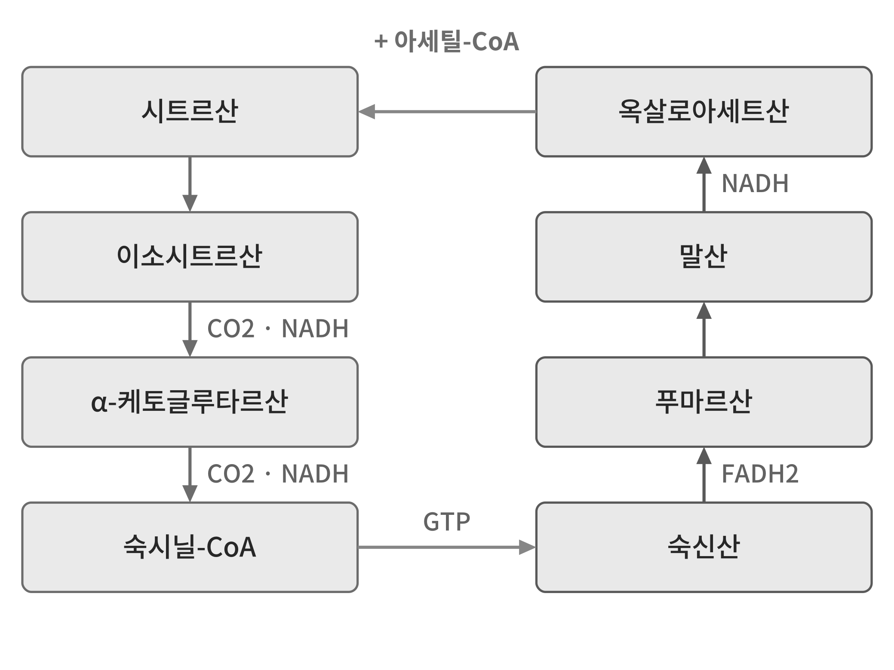
그림 6-1에서 중요한 점은 회로 안에서 산소가 직접 쓰이지 않는다는 것이다. 아세틸-CoA의 에너지는 NADH 3개, FADH2 1개, GTP 1개에 담기고, 이 전자 운반체들이 3부의 전자전달계에서 산소로 전자를 넘기며 ATP를 만든다. 회로가 호기 상태에서만 지속되는 이유는 NADH를 비워 NAD+를 재생할 곳이 전자전달계뿐이기 때문이다.
표 6-1. TCA 회로 여덟 단계 요약.
| 단계 | 효소 | 반응 | 생성물 |
|---|---|---|---|
| 1 | 시트르산 합성효소 | 아세틸-CoA + 옥살로아세트산 → 시트르산 | 비가역, 조절 |
| 2 | 아코니테이스 | 시트르산 → 이소시트르산 | |
| 3 | 이소시트르산 탈수소효소 | 이소시트르산 → α-케토글루타르산 | CO2, NADH, 조절 |
| 4 | α-케토글루타르산 탈수소효소 복합체 | α-케토글루타르산 → 숙시닐-CoA | CO2, NADH, 조절 |
| 5 | 숙시닐-CoA 합성효소 | 숙시닐-CoA → 숙신산 | GTP(또는 ATP) |
| 6 | 숙신산 탈수소효소 | 숙신산 → 푸마르산 | FADH2 |
| 7 | 푸마레이스 | 푸마르산 → 말산 | |
| 8 | 말산 탈수소효소 | 말산 → 옥살로아세트산 | NADH |
표 6-1에서 조절은 대부분 에너지 신호로 이루어진다. 시트르산 합성효소는 ATP와 숙시닐-CoA로 억제되고, 이소시트르산 탈수소효소는 ADP와 칼슘으로 활성화되고 ATP와 NADH로 억제된다. α-케토글루타르산 탈수소효소 복합체는 구조가 PDH와 비슷하며, 숙시닐-CoA와 NADH로 억제된다. 이렇게 에너지가 충분하면 회로가 느려지고 부족하면 빨라진다. 한 바퀴에서 얻는 양은 아세틸-CoA 1분자당 NADH 3, FADH2 1, GTP 1이다. 포도당 한 분자는 아세틸-CoA 둘을 만들므로 회로를 두 바퀴 돌린다.
TCA 회로의 중간체는 회로 안에서만 쓰이지 않는다. 시트르산은 세포질로 나가 지방산 합성의 재료가 되고, α-케토글루타르산은 글루탐산으로, 숙시닐-CoA는 헴 합성으로, 옥살로아세트산은 포도당 신생과 아스파르트산 합성으로 빠져나간다. 이렇게 중간체가 빠져나가는 일을 분기(cataplerosis)라 한다. 중간체가 빠져나가기만 하면 회로가 멈추므로, 보충 반응(anaplerosis)이 필요하다. 가장 중요한 보충 반응은 피루브산 카르복실화효소(비오틴 필요)가 피루브산을 옥살로아세트산으로 바꾸는 반응이다. 이 효소는 아세틸-CoA가 많을 때 활성화된다. 지방산 산화로 아세틸-CoA가 넘치는 공복에는 이 효소가 간에서 포도당 신생을 돕는다. 아미노산도 α-케토글루타르산, 숙시닐-CoA, 푸마르산, 옥살로아세트산의 형태로 회로에 들어온다(9장).
그림 6-2. TCA 회로의 보충 반응과 분기. 왼쪽은 회로의 중간체를 채우는 반응(피루브산 카르복실화, 아미노산 유입), 오른쪽은 중간체가 빠져나가는 분기(지방산·글루탐산·헴·포도당 신생)이다. 개념도이다.
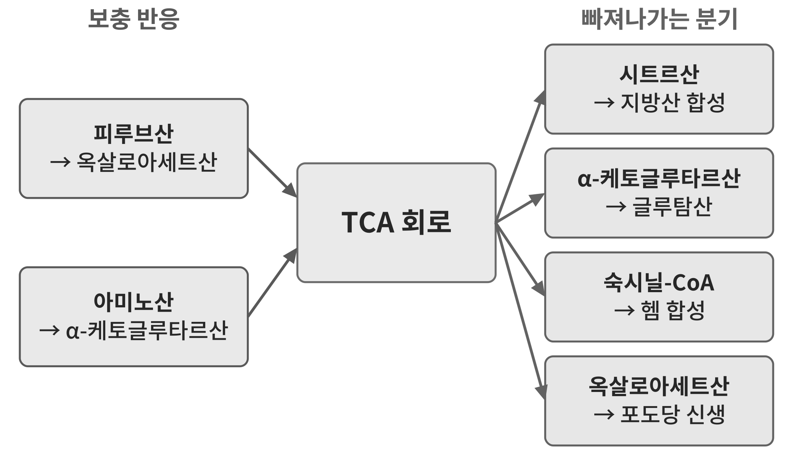
그림 6-2는 아세틸-CoA의 행방을 가르는 지도이기도 하다. 식후에는 시트르산이 회로 밖으로 나가 지방산 합성의 재료가 되고(7장, 18장), 공복에는 옥살로아세트산이 포도당 신생으로 빠져나간다(23장). 같은 회로가 시간표에 따라 다른 방향으로 열린다.
Berg, J. M., Tymoczko, J. L., Gatto, G. J., Jr., & Stryer, L. (2019). Biochemistry (9th ed.). W. H. Freeman.
Krebs, H. A., & Johnson, W. A. (1937). The role of citric acid in intermediate metabolism in animal tissues. Enzymologia, 4, 148–156.
Nelson, D. L., & Cox, M. M. (2021). Lehninger principles of biochemistry (8th ed.). W. H. Freeman.
이 장의 출발점 1904년 독일의 프란츠 크노프(Franz Knoop)는 개에게 말단에 벤젠 고리를 붙인 지방산을 먹이고 소변을 분석했다. 탄소 사슬이 홀수 개인 지방산에서는 벤조산 유도체가, 짝수 개인 지방산에서는 페닐아세트산 유도체가 나왔다. 사슬이 탄소 두 개씩 잘려 나간다는 증거였다. 사슬의 β 위치(카르복실기에서 두 번째 탄소)가 산화된다는 뜻으로 이 경로는 β산화라 불리게 되었다. 이 장은 크노프가 처음 본 그 과정과, 그 반대인 지방산 합성, 그리고 두 경로를 한 스위치로 묶는 말로닐-CoA의 이야기이다.
지방산은 연료로 쓰이기 전에 먼저 활성화되어야 한다. 세포질에서 긴사슬 아실-CoA 합성효소(ACSL)가 ATP를 AMP와 파이로인산으로 쪼개면서 지방산을 코엔자임 A와 결합시켜 아실-CoA를 만든다. 이 활성화에는 ATP의 고에너지 인산 결합 두 개가 쓰인다.
그러나 아실-CoA는 미토콘드리아 내막을 통과하지 못한다. 카르니틴(carnitine)이 운반체 역할을 한다. 외막의 카르니틴 팔미토일기 전이효소 1(CPT1)이 아실기를 카르니틴으로 옮겨 아실카르니틴을 만들고, 내막의 카르니틴 아실카르니틴 전위효소(CACT)가 이를 기질로 들여보내며, 내막 안쪽의 CPT2가 다시 아실-CoA로 되돌린다. 이 단계들이 지방산 산화의 입구이다.
그림 7-1. 카르니틴 셔틀과 말로닐-CoA 스위치. 세포질의 지방산은 아실-CoA가 된 뒤 CPT1, CACT, CPT2를 거쳐 미토콘드리아 기질에서 다시 아실-CoA가 되어 β산화에 들어간다. 지방산 합성의 중간체인 말로닐-CoA는 CPT1을 억제해, 합성과 산화가 동시에 돌아가는 일을 막는다. 개념도이다.
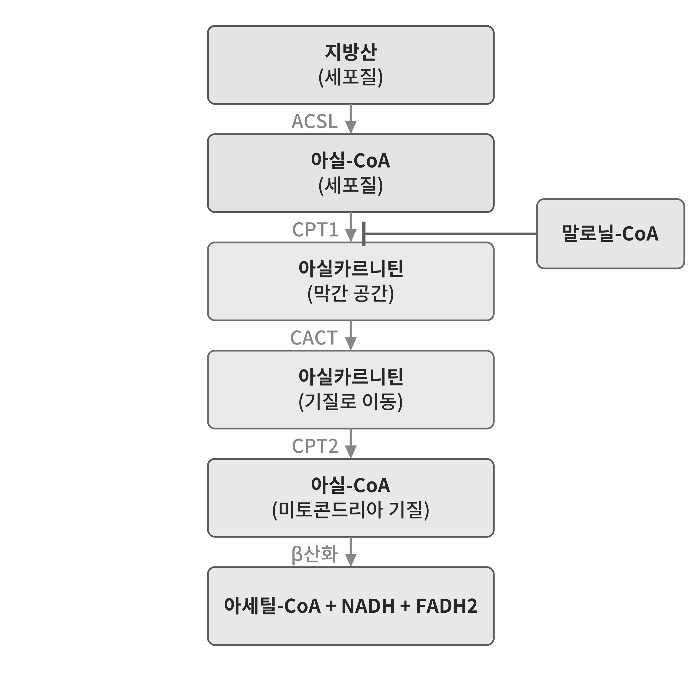
그림 7-1의 말로닐-CoA 억제는 이 장의 핵심이다. 지방산 합성이 활발한 식후에는 말로닐-CoA가 늘어 CPT1이 닫히고, 갓 합성한 지방산이 곧바로 산화되지 않는다. 공복에는 말로닐-CoA가 줄어 CPT1이 열리고, 지방산이 미토콘드리아로 흘러간다. 이 스위치를 알아낸 것은 제임스 맥개리(J. Denis McGarry)와 대니얼 포스터(Daniel Foster)의 연구였다. 29장에서 식후-공복 전환의 스위치로 다시 다룬다.
기질 안에서 아실-CoA는 네 단계의 반응으로 한 번에 탄소 두 개씩 잘려 아세틸-CoA가 된다. 첫째, 아실-CoA 탈수소효소가 FAD를 이용해 두 번째와 세 번째 탄소 사이에 이중 결합을 만들며 FADH2를 낸다. 둘째, 수화효소가 물을 붙인다. 셋째, 3-하이드록시아실-CoA 탈수소효소가 NAD+로 산화해 NADH를 낸다. 넷째, 티올레이스가 CoA로 사슬을 잘라 아세틸-CoA와 두 탄소 짧아진 아실-CoA를 만든다. 이 과정을 사슬이 끝날 때까지 되풀이한다.
표 7-1. β산화 한 바퀴의 네 단계.
| 단계 | 효소 | 변화 | 얻는 것 |
|---|---|---|---|
| 1 | 아실-CoA 탈수소효소 | 이중 결합 생성 | FADH2 1 |
| 2 | 에노일-CoA 수화효소 | 물 첨가 | 없음 |
| 3 | 3-하이드록시아실-CoA 탈수소효소 | 하이드록시기 산화 | NADH 1 |
| 4 | 티올레이스(3-케토아실-CoA 티올레이스) | CoA로 절단 | 아세틸-CoA 1 |
표 7-1의 한 바퀴는 아세틸-CoA 1, FADH2 1, NADH 1을 낸다. 탄소 16개의 팔미트산(palmitic acid)은 7번 돌아 아세틸-CoA 8, FADH2 7, NADH 7을 낸다. 아세틸-CoA 8분자는 TCA 회로에서 다시 NADH, FADH2, GTP를 낸다. 포도당 한 분자의 에너지 산출과 비교하면 팔미트산 한 분자의 산출량이 훨씬 크다. 이것이 지방이 에너지 저장의 주 형태가 된 이유이다.
표 7-2. 팔미트산 한 분자의 ATP 수지(P/O 비 NADH 2.5, FADH2 1.5 가정).
| 항목 | 개수 | 환산 ATP |
|---|---|---|
| β산화 FADH2 | 7 | 10.5 |
| β산화 NADH | 7 | 17.5 |
| 아세틸-CoA 8분자의 TCA 회로 (각 10 ATP) | 8 | 80 |
| 합계(총) | 108 | |
| 활성화에 쓰인 ATP 2분자 상당 | −2 | |
| 순 | 106 |
표 7-2의 숫자는 3부(11장)에서 설명할 P/O 비의 가정에 달려 있다. 과거 교과서의 129 ATP는 NADH 3, FADH2 2를 가정한 값이다. 최근 교과서는 2.5와 1.5를 쓰며, 이 책도 이를 따른다. 불포화 지방산과 홀수 사슬 지방산은 추가 효소가 필요해 값이 달라진다.
지방산 합성은 β산화의 역반응이 아니다. 위치(세포질)와 효소와 환원력(NADPH)이 모두 다르다. 시작은 미토콘드리아의 시트르산이 세포질로 나오는 것이다. ATP 시트르산 분해효소(ACLY)가 시트르산을 세포질의 아세틸-CoA와 옥살로아세트산으로 쪼갠다(6장). 아세틸-CoA 카르복실화효소(ACC)가 아세틸-CoA에 이산화탄소(탄산수소 이온)를 붙여 말로닐-CoA를 만든다. 이 단계가 합성의 속도를 정한다. 지방산 합성효소(fatty acid synthase, FASN)가 말로닐-CoA 단위로 사슬을 탄소 둘씩 늘이며 팔미트산을 만든다. 이 효소의 구조와 반응 기전은 1950년대 페오도르 리넨(Feodor Lynen) 등이 밝혔다. 팔미트산 한 분자에는 아세틸-CoA 1과 말로닐-CoA 7이 쓰이며, NADPH가 14개 필요하다(3장).
그림 7-2. 지방산 합성의 흐름. 시트르산이 세포질로 나와 아세틸-CoA가 되고, ACC가 말로닐-CoA를 만들며, FASN이 팔미트산을 만든다. 팔미트산은 글리세롤과 에스터화해 중성지방이 된다. ACC는 인슐린으로 활성화되고 AMPK로 억제된다. 개념도이다.
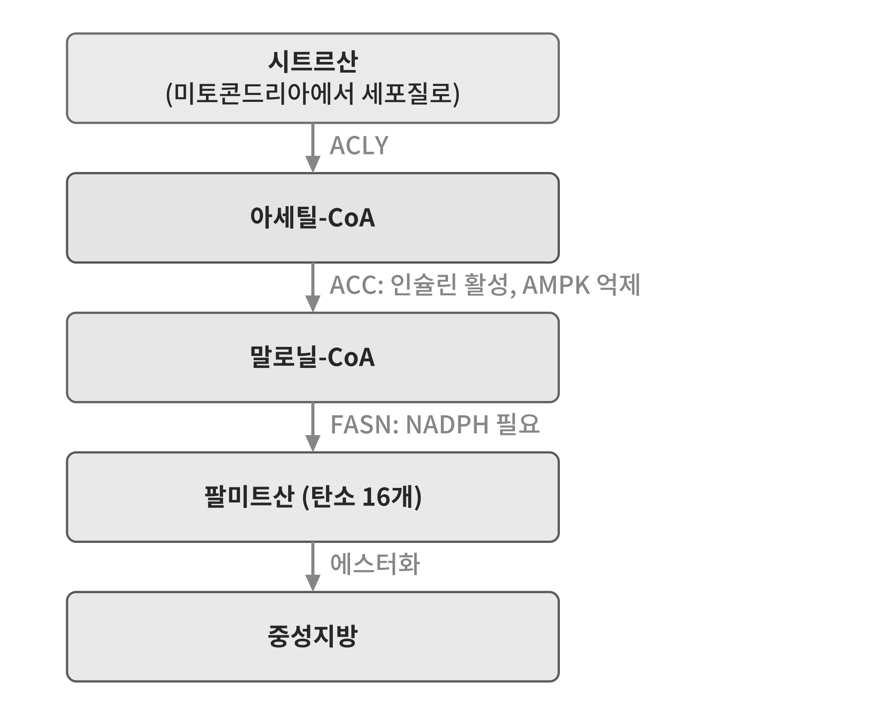
그림 7-2에서 ACC의 두 조절자를 눈여겨보아야 한다. 인슐린은 ACC를 탈인산화해 켜고 식후의 합성을 촉진하며, 에너지 부족을 알리는 AMPK(14장)는 ACC를 인산화해 끈다. 사람의 ACC는 두 가지가 있다. 간과 지방조직의 세포질에 있는 ACC1이 합성에, 근육과 심장의 미토콘드리아 외막에 있는 ACC2가 CPT1을 막는 말로닐-CoA를 만드는 데 쓰인다. 사람 간에서 포도당과 과당에서 지방산을 새로 만드는 일(새 지방 생성, de novo lipogenesis)은 18장과 36장의 지방간 이야기에서 다시 중요해진다.
Berg, J. M., Tymoczko, J. L., Gatto, G. J., Jr., & Stryer, L. (2019). Biochemistry (9th ed.). W. H. Freeman.
Knoop, F. (1904). Der Abbau aromatischer Fettsäuren im Tierkörper. Beiträge zur Chemischen Physiologie und Pathologie, 6, 150–162.
McGarry, J. D., & Foster, D. W. (1980). Regulation of hepatic fatty acid oxidation and ketone body production. Annual Review of Biochemistry, 49, 395–420.
Nelson, D. L., & Cox, M. M. (2021). Lehninger principles of biochemistry (8th ed.). W. H. Freeman.
이 장의 출발점 1921년 미국 메이요 클리닉의 러셀 와일더(Russell Wilder)는 간질 환자를 위해 단식과 같은 대사 상태를 음식으로 만들어 내는 방법을 제안했다. 지방을 많이 먹고 탄수화물을 거의 먹지 않으면, 굶을 때처럼 혈액에 케톤체가 늘어나 발작이 줄어드는 환자가 있었다. 와일더는 이를 케톤 생성 식이(ketogenic diet)라 이름 붙였다. 케톤체는 처음에는 당뇨병의 위험 신호로만 알려졌지만, 지금은 뇌의 비상 연료이자 신호 분자로 이해된다. 이 장은 케톤체가 어디서 어떻게 만들어지고 쓰이는지를 분자 수준에서 정리한다.
케톤체(ketone bodies)는 아세토아세트산(acetoacetate), β-하이드록시부티르산(β-hydroxybutyrate), 아세톤(acetone)의 세 물질을 묶어 부르는 말이다. 엄밀하게 보면 β-하이드록시부티르산은 케톤기가 없는 하이드록시산이지만, 아세토아세트산과 서로 쉽게 바뀌므로 관습적으로 함께 센다. 아세톤은 아세토아세트산이 저절로 탈카복실화해 생기는 부산물이며, 숨으로 배출되어 특유의 냄새를 낸다.
표 8-1. 케톤체 세 가지.
| 물질 | 화학적 성격 | 역할 |
|---|---|---|
| β-하이드록시부티르산 | 하이드록시산 | 혈중 주된 형태, 에너지·신호 |
| 아세토아세트산 | 케토산 | 에너지원, β-하이드록시부티르산과 상호 전환 |
| 아세톤 | 케톤 | 부산물, 호흡으로 배출 |
케톤체는 간의 미토콘드리아 기질에서 만들어진다. 재료는 지방산 β산화(7장)에서 넘쳐 나온 아세틸-CoA이다. 아세틸-CoA 두 분자가 티올레이스로 결합해 아세토아세틸-CoA가 되고, 여기에 아세틸-CoA 한 분자가 더 붙어 HMG-CoA(3-하이드록시-3-메틸글루타릴-CoA)가 된다. 이 단계를 맡는 HMG-CoA 합성효소(미토콘드리아형 HMGCS2)가 케톤 생성의 속도를 정한다. 이어 HMG-CoA 분해효소가 아세틸-CoA를 떼어 내고 아세토아세트산을 만든다. 아세토아세트산의 일부는 β-하이드록시부티르산 탈수소효소(BDH1)가 NADH로 환원해 β-하이드록시부티르산으로 바꾼다.
그림 8-1. 간의 케톤체 생성 경로. 아세틸-CoA 두 분자가 합쳐져 아세토아세틸-CoA, HMG-CoA를 거쳐 아세토아세트산이 만들어지고, 일부는 NADH를 쓰는 환원으로 β-하이드록시부티르산이 되며 일부는 아세톤이 된다. 개념도이다.
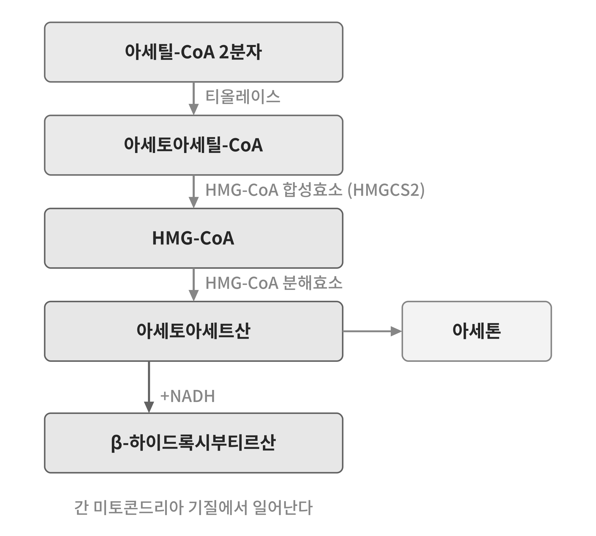
그림 8-1을 읽는 순서와 조절은 이렇다. 공복에는 인슐린이 낮고 글루카곤이 높아 지방조직에서 지방산이 풀려 나오고, 간의 ACC가 꺼져 말로닐-CoA가 줄어든다. CPT1이 열려 지방산이 미토콘드리아로 들어가 β산화가 빨라진다. 그러나 TCA 회로로 들어갈 옥살로아세트산이 포도당 신생에 불려 나가 부족해지면(6장), 쏟아져 나오는 아세틸-CoA가 케톤 생성 쪽으로 흘러간다. 이 경로는 아세틸-CoA가 많을 때 켜지는 “넘침 배출구”인 셈이다. 22~25장에서 공복의 시간표와 함께 자세히 다룬다.
케톤체는 혈액을 타고 뇌, 근육, 심장 같은 조직으로 가서 연료로 쓰인다. β-하이드록시부티르산은 아세토아세트산으로 되돌려진 뒤, 숙시닐-CoA:3-케토산 CoA 전이효소(SCOT, 유전자 이름은 OXCT1)가 숙시닐-CoA의 CoA를 받아 아세토아세틸-CoA를 만든다. 티올레이스가 이를 아세틸-CoA 두 분자로 쪼개 TCA 회로에 넣는다.
그림 8-2. 케톤체의 생성에서 이용까지. 간이 만든 케톤체는 혈액을 거쳐 말초 조직으로 가서 아세토아세틸-CoA를 거쳐 아세틸-CoA 두 분자가 된다. 간에는 SCOT가 없어서 자기가 만든 케톤체를 쓰지 못하고 다른 조직에 내보내기만 한다. 개념도이다.
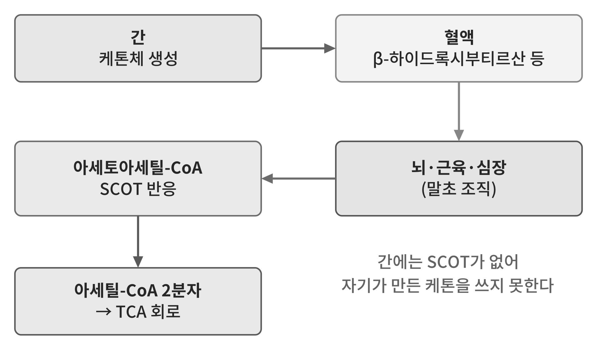
그림 8-2의 마지막 문장이 케톤체 대사의 구조적 특징이다. 간은 케톤체를 만드는 데 집중하고 쓰지는 못하므로, 만든 만큼이 몸의 다른 조직으로 흘러간다. 이 점은 간이 “연료 공급 공장”이라는 31장의 그림과도 이어진다. 뇌는 포도당 외에는 지방산을 거의 쓰지 못하지만(혈액-뇌 장벽을 지방산이 쉽게 넘지 못함), 케톤체는 운반체를 통해 뇌로 들어가 연료가 된다. 오랜 공복에 뇌가 쓰는 연료 중 케톤체의 비율이 크게 오른다는 연구는 조지 캐힐(George Cahill) 등의 1960년대 연구에서 나왔고, 25장에서 상세히 다룬다.
표 8-2. 상태별 혈중 β-하이드록시부티르산의 대략적 범위. 문헌에 따라 범위가 다르므로 어림값으로 읽는다. 개인차와 측정법의 차이가 크다.
| 상태 | 혈중 β-하이드록시부티르산(mmol/L) | 비고 |
|---|---|---|
| 식후 | 0.1 미만 | 인슐린 높음 |
| 하룻밤 공복 | 0.1~0.3 | 간 글리코겐 소진 시작 |
| 2~3일 단식 | 약 1~3 | 케톤 생성 본격화 |
| 장기 단식 | 약 5~8 | 뇌의 케톤 이용 증가 |
| 제1형 당뇨병 케톤산증 | 대개 3 이상, 수십 mmol/L까지 | 인슐린 결핍, pH 저하(위험) |
표 8-2에서 주의할 점은 영양학적 케톤증(nutritional ketosis)과 케톤산증(ketoacidosis)의 구별이다. 인슐린이 있는 한 케톤 생성은 일정 수준 이하로 억제되고 혈액 pH는 유지된다. 인슐린이 거의 없는 제1형 당뇨병에서는 이 제동이 풀려 케톤체가 폭증하고 혈액이 산성이 된다. 두 상태는 수치도 원인도 다르다.
β-하이드록시부티르산은 연료일 뿐 아니라 신호 분자이다. 2013년 마르시아 시무(Shimazu)와 에릭 베르딘(Eric Verdin) 등은 이 물질이 히스톤 탈아세틸화효소(HDAC)를 억제해 산화 스트레스 방어 유전자의 발현을 높인다고 보고했다. 또 세포 표면의 수용체 HCAR2(GPR109A)를 활성화하고, 염증소체(NLRP3) 활성을 낮춘다는 보고도 있다. 이들 연구는 케톤체의 효과가 단순한 에너지 공급을 넘는다는 가설의 근거가 되고 있으나, 사람에서의 재현과 생리적 농도에서의 효과는 아직 논쟁 중이다. 14장과 28장에서 공복 신호로서 다시 정리한다.
Cahill, G. F., Jr. (2006). Fuel metabolism in starvation. Annual Review of Nutrition, 26, 1–22. https://doi.org/10.1146/annurev.nutr.26.061505.111258
Nelson, D. L., & Cox, M. M. (2021). Lehninger principles of biochemistry (8th ed.). W. H. Freeman.
Shimazu, T., Hirschey, M. D., Newman, J., He, W., Shirakawa, K., Le Moan, N., Grueter, C. A., Lim, H., Saunders, L. R., Stevens, R. D., Newgard, C. B., Farese, R. V., Jr., de Cabo, R., Ulrich, S., Akassoglou, K., & Verdin, E. (2013). Suppression of oxidative stress by β-hydroxybutyrate, an endogenous histone deacetylase inhibitor. Science, 339(6116), 211–214. https://doi.org/10.1126/science.1227166
Wilder, R. M. (1921). The effects of ketonemia on the course of epilepsy. Mayo Clinic Bulletin, 2, 307–308.
Youm, Y.-H., Nguyen, K. Y., Grant, R. W., Goldberg, E. L., Bodogai, M., Kim, D., D’Agostino, D., Planavsky, N., Lupfer, C., Kanneganti, T. D., Kang, S., Horvath, T. L., Fahmy, T. M., Crawford, P. A., Biragyn, A., Alnemri, E., & Dixit, V. D. (2015). The ketone metabolite β-hydroxybutyrate blocks NLRP3 inflammasome–mediated inflammatory disease. Nature Medicine, 21(3), 263–269. https://doi.org/10.1038/nm.3804
이 장의 출발점 1932년 한스 크렙스는 제자 쿠르트 헨젤라이트(Kurt Henseleit)와 함께 간 조직 조각에 암모니아와 아르기닌을 넣고 요소(urea)가 만들어지는 속도를 쟀다. 오르니틴이나 시트룰린, 아르기닌을 조금 넣으면 요소 생성이 크게 늘었는데, 이 물질들이 닳지 않고 촉매처럼 작용했다. 5년 뒤 TCA 회로를 밝힐 때 쓴 바로 그 논리를 그가 먼저 요소회로에서 쓴 것이다. 이 장은 단백질의 구성 단위인 아미노산이 어떻게 에너지가 되고, 그때 나오는 질소가 어떻게 안전하게 버려지는지를 다룬다.
아미노산을 연료로 쓰려면 먼저 아미노기(-NH2)를 떼어 내야 한다. 아미노기 전이효소(aminotransferase, 트랜스아미네이스)는 아미노산의 아미노기를 α-케토글루타르산에 건네 글루탐산(glutamate)으로 만들고, 아미노산은 탄소 골격만 남은 α-케토산이 된다. 이 반응은 비타민 B6의 활성형인 피리독살 인산(PLP)을 보조 인자로 쓰며 가역적이다. 대표적인 효소가 알라닌 아미노기 전이효소(ALT)와 아스파르트산 아미노기 전이효소(AST)이다. 건강검진에서 혈중 ALT·AST를 재는 것은 이 효소가 간세포에 많아, 간 손상 때 혈액으로 새어 나오기 때문이다.
글루탐산의 아미노기는 글루탐산 탈수소효소(glutamate dehydrogenase)에 의해 NAD(P)+가 환원되면서 암모니아(NH4+)로 떨어진다. 암모니아는 독성이 커서 그대로 둘 수 없다. 조직마다 암모니아를 무독한 형태로 간에 보내는 운반체가 있다.
표 9-1. 질소를 간으로 보내는 두 운반체.
| 운반체 | 만들어지는 곳 | 운반 방식 | 간에서의 처리 |
|---|---|---|---|
| 글루타민 | 대부분의 조직, 근육 | 글루타민 합성효소가 NH4+를 글루탐산에 붙여 만듦 | 글루타미네이스가 NH4+를 되떼어 요소회로로 |
| 알라닌 | 근육 | 피루브산에 아미노기를 줌(ALT) | 간에서 피루브산으로 되돌려 포도당 신생에 쓰고 아미노기는 요소회로로(포도당-알라닌 회로) |
표 9-1의 포도당-알라닌 회로는 5장 코리 회로의 질소 버전이다. 근육이 피루브산을 알라닌으로 보내면 근육의 질소도 함께 간으로 가고, 간은 이를 포도당으로 바꿔 근육에 돌려준다. 22~27장의 공복 이야기에서 “근육-간 아미노산 회로”로 중심 역할을 한다.
간에서 암모니아는 요소회로(urea cycle)를 거쳐 요소로 바뀐다. 요소회로는 미토콘드리아와 세포질에 걸쳐 있다. 미토콘드리아에서 카르바모일 인산 합성효소 1(CPS1)이 NH4+, 이산화탄소, ATP 두 분자로 카르바모일 인산을 만들며, 이 효소는 N-아세틸글루탐산이라는 활성화 인자가 있어야 작동한다. 오르니틴 카르바모일기 전이효소(OTC)가 이를 오르니틴에 붙여 시트룰린을 만든다. 시트룰린이 세포질로 나가 아스파르트산과 결합해 아르기니노숙신산이 되고(ASS), 푸마르산을 떼어 내 아르기닌이 되며(ASL), 아르기닌분해효소(ARG1)가 아르기닌을 요소와 오르니틴으로 가른다. 오르니틴은 다시 미토콘드리아로 돌아가 회로가 닫힌다.
그림 9-1. 요소회로. 왼쪽 미토콘드리아에서 카르바모일 인산을 거쳐 시트룰린이 만들어지고, 오른쪽 세포질에서 아르기니노숙신산, 아르기닌을 거쳐 요소가 만들어진다. 오르니틴이 미토콘드리아로 되돌아가 회로가 이어진다. 두 번째 질소는 아스파르트산이, 첫 번째 질소는 NH4+가 제공한다. 개념도이다.
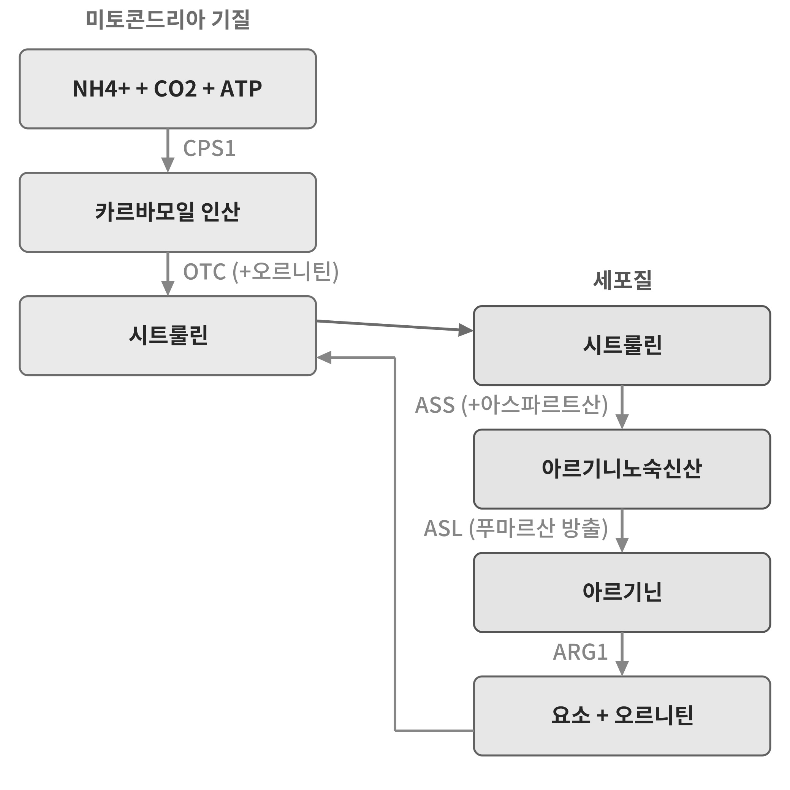
그림 9-1에서 요소 한 분자의 두 질소 중 하나는 암모니아에서, 다른 하나는 아스파르트산에서 온다. 아스파르트산은 푸마르산이 되어 TCA 회로로 들어간다. 이처럼 요소회로와 TCA 회로는 푸마르산과 옥살로아세트산을 통해 연결되어 있다(6장). 요소 한 분자를 만드는 데 4개의 고에너지 인산 결합이 쓰인다고 흔히 계산한다. 단백질을 많이 먹는 식사나 오랜 공복에는 요소 생성이 늘어나며, 이 질소 배설량을 재어 단백질 분해 정도를 추정할 수 있다.
아미노기를 뗀 탄소 골격은 TCA 회로의 중간체나 아세틸-CoA로 들어간다. 피루브산, α-케토글루타르산, 숙시닐-CoA, 푸마르산, 옥살로아세트산으로 들어가는 골격은 결국 옥살로아세트산을 거쳐 포도당 신생에 쓰일 수 있으므로 포도당 생성 아미노산(glucogenic amino acids)이라 한다. 아세틸-CoA나 아세토아세틸-CoA로만 분해되는 골격은 포도당으로 바뀔 수 없고 케톤체나 지방산의 재료가 되므로 케톤 생성 아미노산(ketogenic amino acids)이라 한다.
그림 9-2. 아미노산의 탄소 골격이 TCA 회로로 들어가는 곳. 위의 다섯 줄(초록)은 포도당 생성 아미노산이 들어가는 곳이며, 맨 아래 줄(붉은색)은 아세틸-CoA와 아세토아세틸-CoA로 들어가는 케톤 생성 경로이다. 이소류신, 페닐알라닌, 티로신, 트립토판, 트레오닌은 두 경로로 모두 들어가는 아미노산으로 분류한다. 개념도이다.
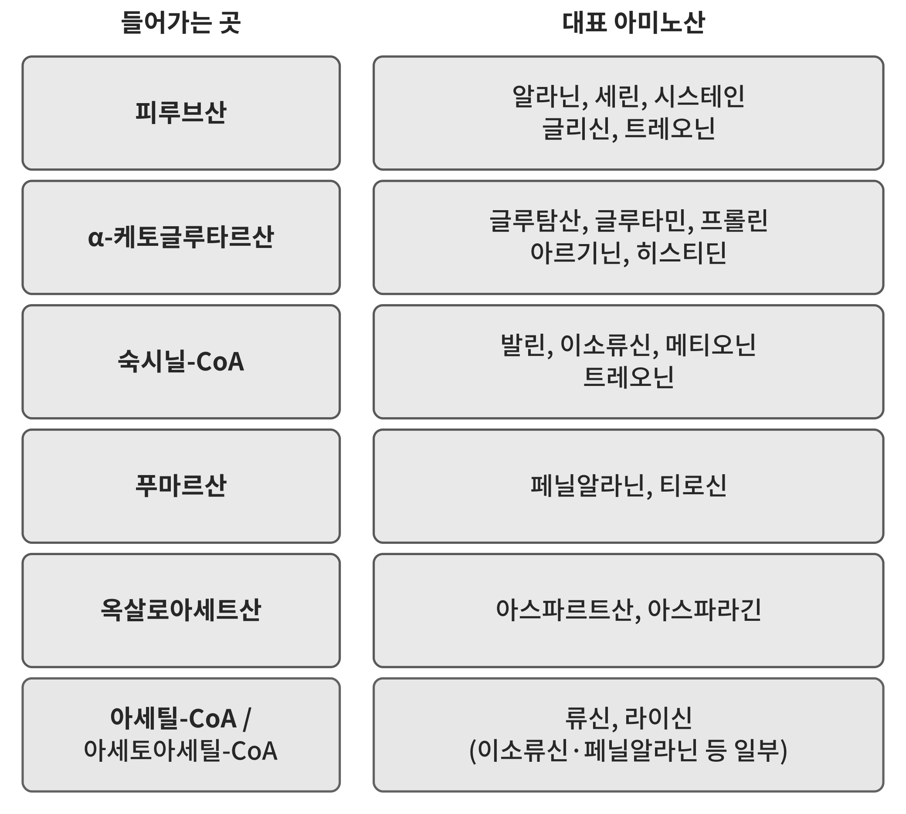
그림 9-2에서 순수한 케톤 생성 아미노산은 류신(leucine)과 라이신(lysine) 둘뿐이다. 이 점은 공복 단백질 보존(26장)과 식물성 식사에서 아미노산 구성을 평가할 때(30장) 다시 쓰인다.
류신, 이소류신, 발린은 곁사슬이 가지 친 모양이어서 분지쇄 아미노산(branched-chain amino acids, BCAA)이라 부른다. 다른 아미노산이 간에서 주로 분해되는 것과 달리 BCAA는 근육 등 간 밖에서도 아미노기 전이를 받는다. 이어 분지쇄 α-케토산 탈수소효소 복합체(BCKDH)가 PDH와 비슷한 방식으로 탈카복실화한다. 2009년 크리스토퍼 뉴가드(Christopher Newgard) 등은 비만과 인슐린 저항이 있는 사람의 혈중 BCAA와 관련 대사물질 농도가 높다고 보고했고, BCAA를 인슐린 저항의 지표이자 가능한 원인으로 보는 연구가 이어졌다. 인과관계는 아직 논쟁 중이며, 21장과 36장에서 인슐린 저항 맥락으로 다시 다룬다.
Krebs, H. A., & Henseleit, K. (1932). Untersuchungen über die Harnstoffbildung im Tierkörper. Hoppe-Seyler’s Zeitschrift für Physiologische Chemie, 210(1–2), 33–66.
Nelson, D. L., & Cox, M. M. (2021). Lehninger principles of biochemistry (8th ed.). W. H. Freeman.
Newgard, C. B., An, J., Bain, J. R., Muehlbauer, M. J., Stevens, R. D., Lien, L. F., Haqq, A. M., Shah, S. H., Arlotto, M., Slentz, C. A., Rochon, J., Gallup, D., Ilkayeva, O., Wenner, B. R., Yancy, W. S., Jr., Eisenson, H., Musante, G., Surwit, R. S., Millington, D. S., Butler, M. D., & Svetkey, L. P. (2009). A branched-chain amino acid-related metabolic signature that differentiates obese and lean humans and contributes to insulin resistance. Cell Metabolism, 9(4), 311–326. https://doi.org/10.1016/j.cmet.2009.02.002